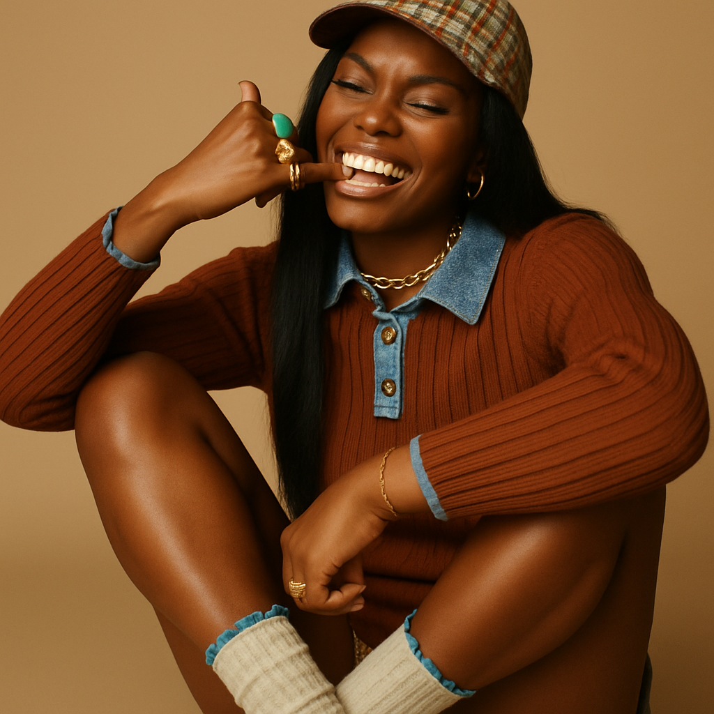
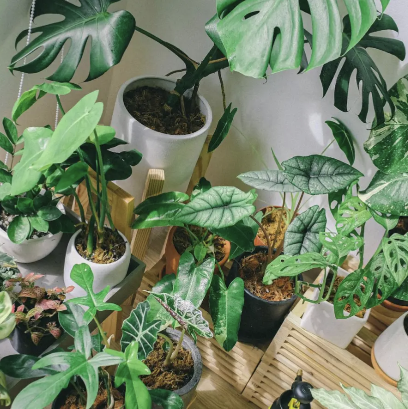

Social campaign
Student project · 2025

Social media marketing study: One Health
Planned and executed a 4-week social media campaign for a New York hospital "One Health".
- Developed a research-driven partnership growth strategy and supporting content plan to expand brand awareness
through collaboration.
- Created a partnership marketing plan with co-branding activities.
- Organized a webinar for the campaign concept.
Result: One Health successfully positioned as a collaborative and community-focused wellness brand.
Social media
Brand awareness
Canva
Social campaign
Student project · 2025

Capstone Project: Soft Power
I aim to create a Hobby-brand focused on a series that I find
captivating because it focuses on visual storytelling and mood-
driven aesthetics, creating an engaging experience for me and
its audience. Its projects aim to evoke emotion and provoke
thought through carefully chosen visuals and narratives.
Social media
Brand design
Social campaign
Student project · 2025
Inclusive Tomorrow: Spring Multi-Channel Campaign
A multi-channel marketing campaign concept for Inclusive Tomorrow, focused on driving raffle ticket
sales while promoting inclusive change. This project connects social media, podcasts, influencers,
email, and display ads into one aligned funnel from awareness to conversion.
Strategy
CTA matrix
Creative brief
social media campaign & analytics
Student project · 2025

Forgetful houseplants
Designed a media strategy for an urban houseplant startup.
- Analyze current and future digital marketing.
- Defined marketing goals (introduce brand, highlight offer, invite to follow on Instagram).
- Create texts and designs in a consistent tone.
Result: much increased engagement and brand awareness.
Instagram/Pinterest marketing
Copywriting
Design
Content & reporting
Ongoing
Personal learning and content practice
I keep practising by creating sample posts, analyzing brands I like, and documenting what I learn about digital marketing.
- Short content experiments on Instagram and LinkedIn.
- Notes on campaigns that work well and why.
- Regular updates to this portfolio as I learn more.
Self-initiated work
Continuous learning